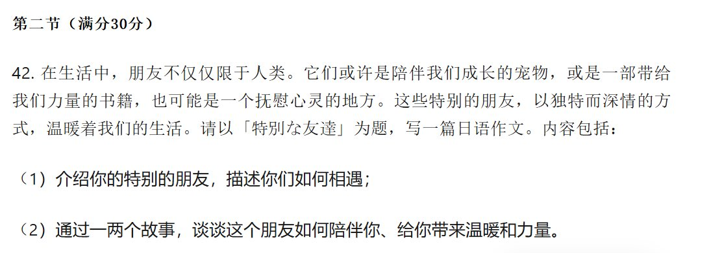

特別な友達
世界のみんなは色々な性格を持って、我々に対する「特別な友達」はある時人ではなく、私たち自身に対する大切な物や場所だと思います。私にとって大切な友達は家の隣にある地下鉄駅だと思います。
その地下鉄駅との初出会いは5歳のごろでした。その前上海に旅出した時乗ったことがありましたけど、実家で見つかったのは初めてでした。私はその地下鉄駅から始まり、地下鉄システムで私が生きてきたシティでの探索はたくさん延べました。
それだけではなく、私はその駅から始まり、私がずっと住んでいる実家の発展状況を感じられました。地下鉄線が伸べれば延べるほど、私は住んでる街の発展が目に映し、輝いているところになるような現象を見つかりました。私はこの街に生きて、この街の日常の姿を見てきました。だから今の私は杭州に移っても、実家の暖かさはその地下鉄駅から根を張って、記憶で生長しました｡
だから私にとって、その地下鉄駅は大切な友達だと思います。
世界のみんなは色々な性格を持って、我々に対する「特別な友達」はある時人ではなく、私たち自身に対する大切な物や場所だと思います。私にとって大切な友達は家の隣にある地下鉄駅だと思います。
その地下鉄駅との初出会いは5歳のごろでした。その前上海に旅出した時乗ったことがありましたけど、実家で見つかったのは初めてでした。私はその地下鉄駅から始まり、地下鉄システムで私が生きてきたシティでの探索はたくさん延べました。
それだけではなく、私はその駅から始まり、私がずっと住んでいる実家の発展状況を感じられました。地下鉄線が伸べれば延べるほど、私は住んでる街の発展が目に映し、輝いているところになるような現象を見つかりました。私はこの街に生きて、この街の日常の姿を見てきました。だから今の私は杭州に移っても、実家の暖かさはその地下鉄駅から根を張って、記憶で生長しました｡
だから私にとって、その地下鉄駅は大切な友達だと思います。
